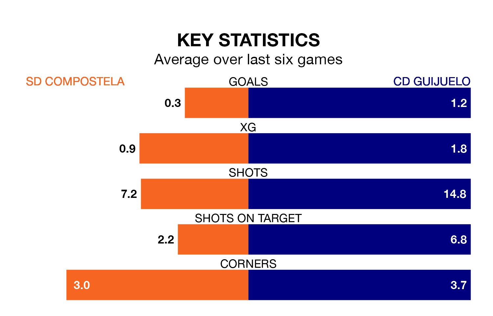

CD Guijuelo visit SD Compostela at the Estadio Multiusos de San Lázaro on Sunday on the back of four consecutive wins in the Segunda División RFEF Group 1.
Guijuelo have picked up 13 points from their last six games, and they face a Compostela side who have lost their last three matches, and collected five points from the last possible 18.
In the last 10 years, Compostela and Guijuelo have played each other on nine occasions. Compostela won four of them, Guijuelo two, and they drew three times.
On average, Compostela scored 1.1 goals and Guijuelo 0.7 in those matches.
Their last meeting was on November 18, when Compostela won 1-0 away.
Guijuelo are fourth in the table after 28 games, of which they have won 13 and drawn seven, earning 46 points.
Compostela are six places behind the visitors in 10th, with 10 wins and six draws putting them on 36 points.
With 27 goals in 28 games so far this season, the home side are scoring at below the league average rate with 1.0 goals per game. But they are conceding fewer than average too, letting in 32 goals at a rate of 1.1 per game.
Guijuelo are also below average scorers, with 1.1 goals per game, compared to a league average of 1.2. They have conceded 0.9 goals per game.
Compostela's last match was on March 24, a 4-0 loss against Cayón.
Guijuelo beat Covadonga 2-1 last time out, on March 23, with Xabier Dominguez Penín on the scoresheet.
Updated: 12:39 (UTC), 26/03/24